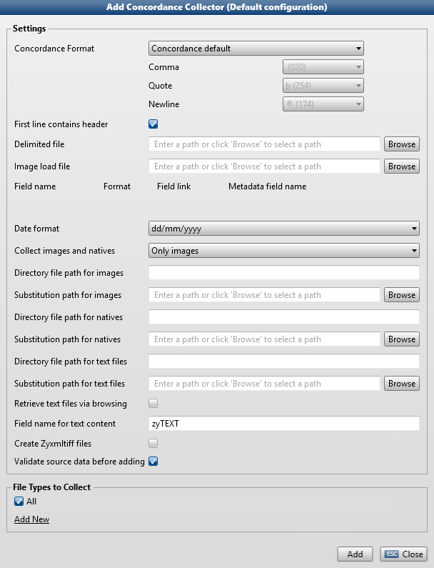

The Concordance Collector imports documents using a delimited text file, the load file (usually in the .dat format). This file contains fields that are linked to documents. When importing these documents the fields and field values from the load file are added to the metadata of the corresponding documents.
A Concordance load file consists of 4 folders: DATA, IMAGES, NATIVES, and TEXT.
The DATA folder contains two related text-delimited files, the Concordance Load File (with a .dat extension) and the Opticon Cross Reference File (with an .opt extension). The Concordance Load File contains the fielded metadata information. The Opticon Cross Reference File has one Bates Number per line and contains the paths to the images.
The IMAGES folder contains subfolders with TIFF images files, named by Bates Number and ending with the extension .tif.
The NATIVES folder contains native versions of files, used to generate the .tif images and .txt files.
The TEXT folder contains single page text files containing ASCI text of processed ESI, named by Bates Number and ending with the extension .txt.

þbates numberþbates rangeþstart batesþend batesþ etc.þ0000000013þ0000000013:0000000013þ0000000013þ etc.þ0000000014þ0000000014:0000000014þ0000000014þ etc.Attention: To see the relationship between attachments and parent documents (the families) in Legal Review, add application/zyxmltiff to the KnownFamilyTypes section of the Review.Standalone.Winservice.config file (this file can be found at \\Program Files (x86)\ZyLAB\EDiscovery\LegalReview\).
To prevent that the parent is missing (when you prefer natives to be collected), make sure you add application/msg to the KnownFamilyTypes section of the Review.Standalone.Winservice.config file.
Field definitions
Date Format
Date format should be set to the same format as the file is exported in from Concordance, e.g. MMDDYYYY, DDMMYY.
Collect images and natives
Choose between collecting 'Only images', 'Only natives' or 'Both images and natives'.
Please note that if, for a document (with file key BAT000001), both a native file and an image file (one or more TIFF pages) are present, you can either collect both the native and the image, only the image or only the native.
However, if for that same document (with key BAT000001) only a native file or only an image file is present, that single native or image file will be collected, no matter what selection was made for this setting. For example, if only a native file is present and you selected to collect only images, the native file will be collected.
Directory file path for images
Define the path to the folder where the Concordance images were originally exported. This path (for example, C:\Program Files (x86)\LexisNexis\Concordance 10\Images\) can be found in the Opticon Cross-Reference File (*.opt).
Substitution path for images
The UNC path to the current images folder on your file system. You should be able to browse to this file locatioin.
Directory file path for natives
Define the path to the folder that contains the native (documents). For example, C:\Program Files (x86)\LexisNexis\Concordance 10\Natives\). This path is defined in the .dat file. The field name that is used to define the path, should be present in the config file of the Concordance Collector. For example (the ZyIndexFieldName can be left empty):<Field name="LINKTONATIVES" type="LinkToNatives" zyIndexFieldName=""/>
Substitution path for natives
The UNC path to the current natives folder on your file system. You should be able to browse to it.
Directory file path for text files
Define the path to the folder that contains the native (documents). For example, C:\Program Files (x86)\LexisNexis\Concordance 10\Text Files\). This path is defined in the .dat file.
Substitution path for text files
This is the UNC path to the current text files folder on your file system. You should be able to browse to it.
Retrieve text files via browsing
Select this option if you want to import TXT versions of the image or native files via browsing. If you select this option, you do not have to define the Directory file and Substitution path for text files. Please make sure the TEXT folder is in the same location as the IMAGES and NATIVES folder.
Field name for text content
This field contains the text representation of the native file. Define the field name used in the .dat file for the text content. This field should be defined in both the config file of the Concordance Collector and the default3n.xml file.
Create Zyxmltiff files
Select this option if you want to create multi-page TIFF graphic files and recognize them as text using Optical Character Recognition (OCR).
Validate source data before adding
When selected, this option ensures that the Concordance format is checked before validation and that the user is warned if there are any mismatches.
|
|
|